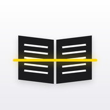

ページを探しています
自動
カラー
グレー
白黒
0
PDF

ブックスキャン
自動でパシャパシャ
本を見つけて、止まったら自動で撮影。ページをめくれば次を撮ります。
手や指を自動で消す
ページを押さえた指を見つけて、紙の色で塗りつぶします。
見開きを分けて1冊のPDFに
左右のページに分けて並べ、白黒で読みやすく仕上げます。
続ける
全削除
スキャン
完了
タイトル
ページ
0ページ
まだページがありません。
本をカメラに向けると自動で撮影します。
PDFを作成
共有・保存
設定
完了
撮影
自動撮影
止まったら自動でシャッター
曲がったページを補正
ページの上下のふちに合わせてまっすぐに
手や指を消す
はじめて使うときにAIを読み込みます
見開き
左右のページに分ける
横長に撮れたときだけ分けます
右綴じ（縦書きの本）
右ページ → 左ページの順に並べます
コツ：暗めの机の上に本を置き、真上から撮るといちばんきれいに認識できます。
閉じる
削除
‹ 前へ
次へ ›